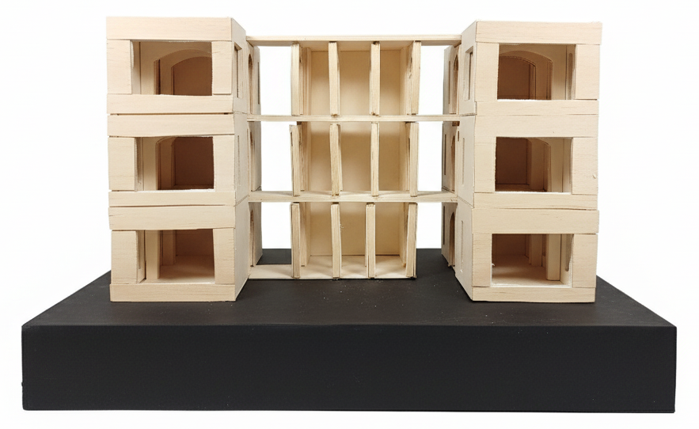
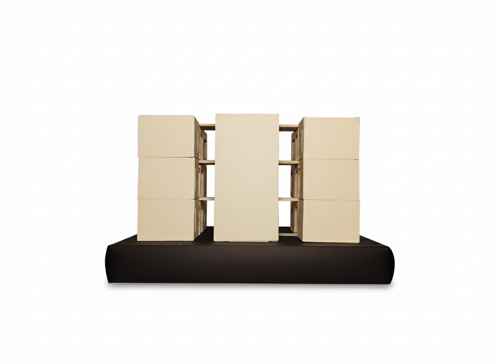
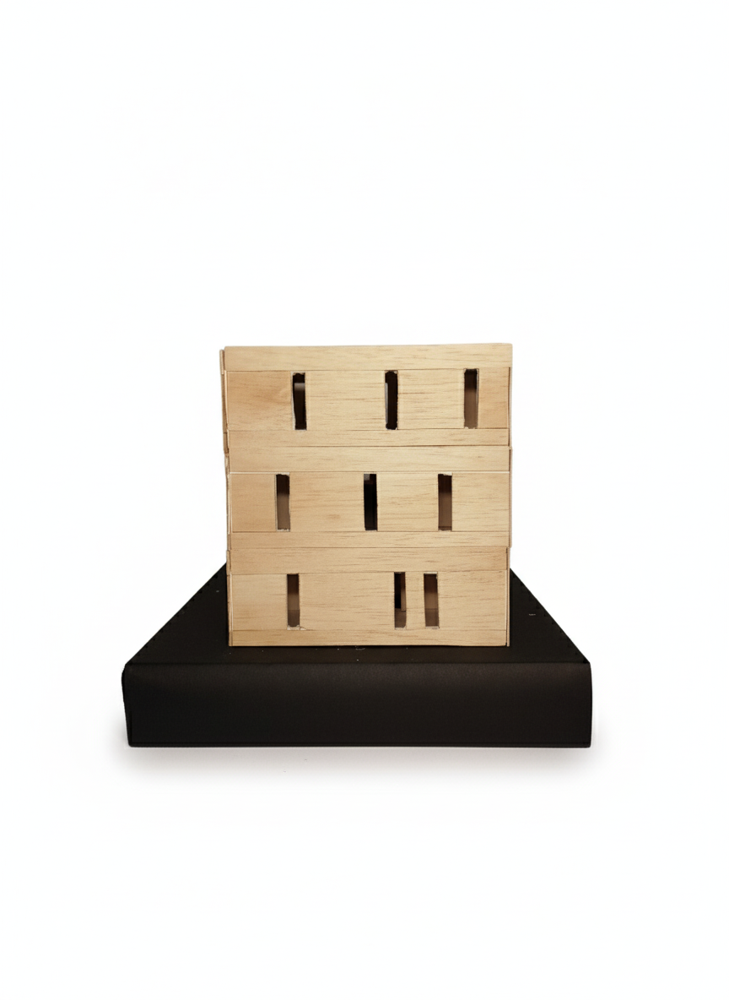

Heri Tibi Hodie Mihi
Projet architectural – ENSAL

Contexte
Ce projet de groupe de première année à l'ENSAL avait pour objectif principal l'étude et la mise en œuvre de la construction en masse. Le défi consistait à concevoir un musée directement implanté sur un site de fouilles archéologiques, en respectant des contraintes strictes liées à l'emprise au sol, à la portance des murs et à l'intégration paysagère.
Démarche Architecturale : Dialogue entre Passé et Présent
Notre concept vise à établir un dialogue respectueux entre l'architecture contemporaine et le site historique qu'elle protège. La construction en masse est utilisée non seulement pour répondre aux contraintes structurelles, mais aussi pour rappeler les techniques ancestrales.
Fluidité et Lumière
Pour garantir une circulation fluide et intuitive, la cage d'escalier a été centralisée dans un noyau indépendant, desservant efficacement les deux corps du bâtiment. Cette disposition optimise l'expérience visiteur et l'accès aux différentes zones d'exposition.
L'utilisation de la voûte en arc n'est pas un simple choix esthétique ; elle structure les espaces intérieurs et établit un lien formel direct avec les vestiges archéologiques environnants, créant une ambiance muséale intime et résonante.
Jeu des Façades et de la Climatisation Passive
- La façade Sud-Est (façade d'entrée) est volontairement pleine et peu percée. Cette masse agit comme une protection symbolique du site et contribue à l'inertie thermique du bâtiment.
- La façade Nord-Ouest est largement vitrée, offrant une vue dégagée et un éclairage naturel abondant sur la zone de fouilles, positionnant l'objet de l'exposition comme le point focal de l'espace.
- Les façades Nord-Est et Sud-Ouest intègrent des ouvertures irrégulières et de petite taille. Cette disposition rappelle les méthodes de construction anciennes (évocation des vestiges) tout en permettant une lumière intime et en limitant l'apport de chaleur pour une gestion thermique passive.
Plans & croquis

